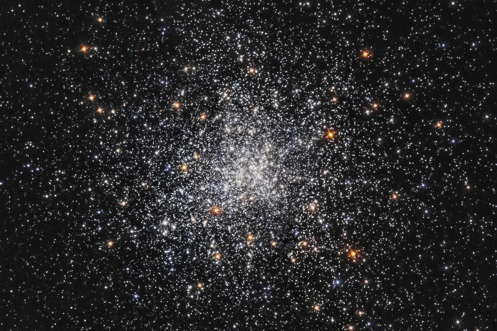

Elisha Modelevsky
PhD Candidate in Astrophysics
Racah Institute of Physics, Hebrew University of Jerusalem
PhD Candidate in Astrophysics
Racah Institute of Physics, Hebrew University of Jerusalem
I am a PhD candidate in Astrophysics at the Hebrew University of Jerusalem (HUJI), supported by a Milner Fellowship and advised by Prof. Re'em Sari. My research focuses on radiative transfer in Little Red Dots, where emission lines are formed and shaped by Thomson scattering. My interests also include stellar dynamics in dense systems and self-similar solutions in hydrodynamics.
Beyond research, I am committed to teaching and organizing our department journal club, and I enjoy math riddles, fantasy books, learning languages, and cooking.

JWST's Little Red Dots are thought to be accreting black holes surrounded by dense ionized gas, and possibly an important part of the story of how black holes grow to supermassive sizes. I work on modeling their Thomson-dominated atmospheres and how emission lines form in them.

Investigating the collision rates of stars in dense stellar environments such as globular clusters and galactic nuclei, with focus on the limitations of the \(n\Sigma v\) approximation in resonant potentials.

Finding analytical and numerical self-similar flow solutions for strong shocks in one and two dimensions. These solutions illuminate the physics of blast waves and asymmetric explosions, and provide exact benchmarks for hydrodynamic codes.
Astrophysical Journal, 2026 (Accepted)
We study emission line formation and broadening in optically thick media where Thomson scattering is dominant, showing that the resulting line profile is roughly a broken power-law. This fits H\(\alpha\) profiles observed in LRDs and strengthens the case for interpretations such as quasi-stars.
Astrophysical Journal, 989, 64 (2025)
We show that the commonly used \(n \Sigma v\) formula is not always valid for stellar collision rates in dense environments, due to the resonant nature of the Kepler and Harmonic potentials.
Physics of Fluids, 33, 056105 (2021)
An analysis of one-dimensional self-similar flows including a strong shock in various geometries. Establishes a connection between the different geometries and develops analytical approximations.
Max Planck Institute for Astronomy (MPIA), Heidelberg, Germany
Princeton University, USA
Max Planck Institute for Extraterrestrial Physics (MPE), Garching, Germany
Bar-Ilan University, Israel
University of Tokyo, Japan
2024 - Present
Racah Institute of Physics, HUJI
Advisor: Prof. Re'em Sari.
2018 - 2024
Israel Defense Force
Applied physics research and modeling.
2019 - 2020
Racah Institute of Physics, HUJI (magna cum laude)
Advisor: Prof. Re'em Sari.
2015 - 2018
HUJI (magna cum laude)
The Talpiot program.
Ross Building, Room 208
Edmond J. Safra Campus, HUJI